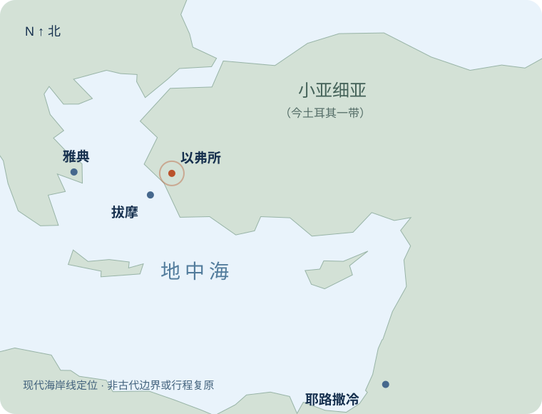

什么是世界？
受造世界中那套排斥父、以自我为中心的欲望秩序。
不是物质本身邪恶，也不是叫我们厌弃人。
把会过去的，放回它的位置。
把自己，交给永远常存的主。
父已在基督里赦免、接纳我们；因此，我们拒绝以欲望和自夸为主的生活，凭信心遵行父的旨意，活在祂所赐的永生中。
这世界和其上的情欲，
都要过去；
惟独遵行神旨意的，
是永远常存。
不是靠行为买永生；是永生结出顺服的果子。
受造世界中那套排斥父、以自我为中心的欲望秩序。
不是物质本身邪恶，也不是叫我们厌弃人。让“我要享受、我要占有、我要显大”取得主权。
享用恩赐，与把恩赐当救主，差别在这里。与父相争、不是出于父、终必过去。
在基督里遵行父旨意的人，却永远常存。先蒙赦免，再学顺服；离开偶像，归向父神。
读经范围完整列出。请先留意：约翰先说“你们的罪得了赦免”，然后才说“不要爱世界”。
1我小子们哪，我将这些话写给你们，是要叫你们不犯罪。若有人犯罪，在父那里我们有一位中保，就是那义者耶稣基督。
2他为我们的罪作了挽回祭，不是单为我们的罪，也是为普天下人的罪。
3我们若遵守他的诫命，就晓得是认识他。
4人若说“我认识他”，却不遵守他的诫命，便是说谎话的，真理也不在他心里了。
5凡遵守主道的，爱神的心在他里面实在是完全的。从此我们知道我们是在主里面。
6人若说他住在主里面，就该自己照主所行的去行。
7亲爱的弟兄啊，我写给你们的，不是一条新命令，乃是你们从起初所受的旧命令；这旧命令就是你们所听见的道。
8再者，我写给你们的是一条新命令，在主是真的，在你们也是真的；因为黑暗渐渐过去，真光已经照耀。
9人若说自己在光明中，却恨他的弟兄，他到如今还是在黑暗里。
10爱弟兄的，就是住在光明中，在他并没有绊跌的缘由。
11惟独恨弟兄的是在黑暗里，且在黑暗里行，也不知道往哪里去，因为黑暗叫他眼睛瞎了。
12小子们哪，我写信给你们，因为你们的罪藉着主名得了赦免。
13父老啊，我写信给你们，因为你们认识那从起初原有的。少年人哪，我写信给你们，因为你们胜了那恶者。小子们哪，我曾写信给你们，因为你们认识父。
14父老啊，我曾写信给你们，因为你们认识那从起初原有的。少年人哪，我曾写信给你们，因为你们刚强，神的道常存在你们心里，你们也胜了那恶者。
15不要爱世界和世界上的事。人若爱世界，爱父的心就不在他里面了。
16因为凡世界上的事，就像肉体的情欲、眼目的情欲，并今生的骄傲，都不是从父来的，乃是从世界来的。
17这世界和其上的情欲都要过去，惟独遵行神旨意的，是永远常存。
正文没有署名。教会传统归于使徒约翰；现代研究对具体作者身份有讨论。本文沿用传统称呼，不把传统当作正文自述。
常见推定为第一世纪后期，约公元85–95年。具体年分无法由本书确定，也不宜仅凭“末时”算出写作日期。
认识福音、被作者称为“小子们”的信徒群体。常与小亚细亚、以弗所周边教会联系；城市名单未在书中列出。
有人离开群体（2:19），有人迷惑信徒（2:26）；争议涉及耶稣是谁、认罪、顺服与弟兄之爱（1:6–10；2:22；4:2–3）。
作者、年代与地域的常见判断参见书卷导论；约翰与以弗所的早期传统见爱任纽《反异端》3.3.4。这些线索不能提供本书写作的精确地址。

以弗所曾是罗马时期的重要港口城市，亚底米崇拜构成其宗教环境的一部分。使徒行传19章记述较早时期，祭祀、工匠收入与城市荣誉彼此交织。这帮助我们理解地区文化，却不能证明本信由那次事件直接引发。
从本书可以确定的现场，是有人带着不同教导离去，留下的信徒需要知道：我们仍在真光中吗？守着使徒传下的福音，是否反而落后了？
城市背景来源 ↗1:4 · 相交的喜乐使喜乐充足，活在与父、子及使徒见证的相交中。
2:1 · 圣洁的生活要信徒不犯罪；跌倒时，仍指向那义者与挽回祭。
2:26 · 分辨迷惑揭露引诱，不以新奇教导交换起初所领受的福音。
5:13 · 永生的确据使信神儿子之名的人知道，自己有永生。
“诺斯底主义”可帮助讨论后来某些相似倾向，但本书没有给对手列出完整派别名称，也未点名克林妥。我们不把二世纪成熟的体系、具体迫害事件或想象中的家中聚会，写成作者已经说明的事实。
约翰不是从“你必须够好”开始。
他从“生命已经显现，罪已经得赦免”开始。
《约翰一书》反复交织三条线：承认那真实成了肉身的子、遵守神的命令、爱弟兄。这不是三条各自通向救恩的道路，而是同一生命的三个表现。2:15–17指出与这种生命相冲突的归属：人若把悖逆的世界当作所爱，就不能同时以父为终极所爱。
前文说恨弟兄的人在黑暗中；后文说否认子的人没有父。因此，“爱世界”不能缩减为衣着、娱乐或消费规格。一个外表节俭、神学词汇丰富的人，也可能借宗教抬高自己、拒绝爱人。
本书站在基督已经降临、受死并赐下生命，而荣耀尚待完全显明的位置。2:8说真光已经照耀；3:2说将来如何还未显明。信徒仍生活在旧秩序中，却已属于在子里赐下的新生命。
于是，2:17的“过去／常存”有救赎历史的分量：不是劝人消沉地躲开日常，而是叫我们按神将要成全的未来，重排今天所爱的一切。
亲爱的弟兄姊妹，我们常以为，世界在教会的门外：在那里，人追求金钱、名声、享乐；我们走进礼拜堂，就暂时离开了世界。然而，一个人可以放下手机，却仍等待别人的羡慕；可以拒绝奢华，却以自己的清高为荣；甚至可以研究真理，只为证明自己比别人更有价值。
世界最深的入口，往往不是我们的口袋，而是我们想靠什么证明自己值得被爱。所以，约翰不是先替我们列一张禁用品清单。他问的是：你的心属于谁？
但我们不可错过这声音的温度。说“不要爱世界”的人，刚刚说过“你们的罪藉着主名得了赦免”（2:12）。这不是门外的雇主对求职者说：“先表现得好，我才收留你。”这是福音中的父家呼召儿女：你们已蒙恩，不要再把自己交给会毁坏你们的主人。今天我们照经文问三件事：什么是世界，什么是爱世界，为什么不要爱世界。
“不要爱世界。”我们首先要问：这里的“世界”，究竟指什么？圣经说神所造的都甚好，也说“神爱世人”（约3:16）；约翰更宣告，生命之道曾被听见、看见、摸过。如果物质本身就是污秽，神的儿子怎么会真实成为肉身？如果身边的人都只该被厌弃，主又为什么命令我们爱弟兄、爱邻舍？
“世界”这个词必须由上下文决定。第16节亲自解释：这里的世界显出肉体的情欲、眼目的情欲和今生的骄傲；它的特征是“不是从父来的”。所以约翰针对的，是受造生活中拒绝父作主、由罪欲与自夸支配的秩序。这个秩序存在于社会，也在我们的欲望里寻找同盟。
面包是父的供应；为了得到面包而背弃父，便显出世界的逻辑。工作是服事人的召命；为了升迁而说谎、踩低别人，把成就当作生命的最后判词，工作就被放上了不属于它的宝座。美是可以感谢的恩赐；当美成为必须占有别人、轻看自己或炫耀优越的理由，心就已经改变了方向。
请听清楚：罪不是创造了一个全新的物质宇宙；罪歪曲了我们与神、与人、与受造物的关系。世界性，不只是“我拥有什么”，更是“我把所拥有的，当成什么”。当然，有些行为本身就违反神的命令，例如欺骗、奸淫和欺压，不能凭一句“我内心很自由”使它们变为正当。
因此，分别为圣不是撤销创造，也不是取消工作、学习、婚姻与文化生活。它是使这些事情重新服在创造主之下。我能感谢地领受，也能在神禁止时放手；我能认真工作，也不准工作夺去诚实、敬拜和爱人的责任。
弟兄姊妹，我们有时用“不要爱世界”来保持距离，结果离穷人、病人、困苦的人也越来越远。约翰却在3:17问：你有世上的财物，看见弟兄缺乏，怎能关闭怜悯的心？这句话刺透我们的伪装：不爱世界，不是把财物藏得更牢，而是让财物能够流向有需要的人。
拒绝受造物作主，才能把受造物当恩赐；拒绝以人为工具，才能真正爱人。
爱不是只有一阵好感。这里的爱涉及心的倚靠、价值判断和生活的投向。我们可能口里说“神最重要”，却让另一个东西决定何时可以诚实、谁值得尊重、什么失败绝不能承受。那个决定你愿意为它牺牲真理与爱人的东西，正在索取你的忠诚。
第16节给我们三面镜子。它们不是互不相干的三种人，也不是所有罪都只能机械地分进三个格子；它们一起揭露，人怎样围着自己组织生活。
身体和正常需要并非恶；败坏在于让欲望凌驾父的旨意。享受从礼物变为权利：只要我想要，就不愿再问合不合神的心意。
诊断：为了舒服，我准许自己违背什么？欣赏变成吞占，观看变成比较。别人拥有的东西，不再引出感谢，而是制造缺口：我一定也要有，否则我就不够好。
诊断：我的目光带来感恩，还是不断比较？把财富、地位、资源或成绩当作自夸的凭据。人不只想拥有，更想被人看见自己拥有，并且相信这些能保证明天。
诊断：若无人知道，我还愿意忠心吗？肉体说：“满足我。”眼目说：“给我更多。”骄傲说：“看我多强。”三种声音最后汇成一句：“让我作主。”这正是伊甸园里罪的方向：不再以神的话定义善，而要自己取得定义善恶的权柄。创世记3:6与这里存在主题上的呼应，但我们不必把每一个词都硬配成一张密码表。
请不要只把这些镜子对准有钱人。富有的人可能因财产自夸，贫穷的人也可能因嫉妒被财产支配。学历高的人可能以知识自立，学历低的人也可能以“我比他们单纯”自义。甚至“我最不属世界”，也可以成为今生骄傲的宗教版本。
我们怎样知道自己是不是爱世界？不只是看一张消费单，而要看发生冲突时的选择：当诚实使我少赚，我听谁的？当同伴获赞而我被忽略，我还愿意爱他吗？当顺服意味着等候，我会不会把等候当作神亏待我的证据？心的主人，常在我们不能如愿的时候显明。
可是，受试探不等于已经把世界当作主人；跌倒也不等于中保不再为我们代求。约翰已经说，声称自己无罪是自欺（1:8）。我们要分辨的，是容让罪作王、替它辩护，还是因罪忧伤，来到基督面前求赦免，并实际离开它。真实悔改不是毫无争战，而是在争战中不再为叛逆争取合法地位。
若今天你看见自己的爱偏离了父，不要把看见罪变成绝望，也不要把恩典变成纵容。请把具体的罪带到那义者面前。你不需要先把心整理干净，才有资格寻求祂；你需要在祂的恩典中，被祂的话和圣灵重新整理。
偶像最深的承诺是“有我，你就够了”；福音的回答是“你在基督里，已被父接纳”。
约翰没有只给命令而不给理由。三节经文把三个理由紧紧连在一起：爱的归属、欲望的来源，以及生命的结局。
“人若爱世界，爱父的心就不在他里面了。”这句话不是说，基督徒心里从不出现错乱的爱；它是在揭露两种主权的不相容。一个人不能一面把父当作最后的权威，一面又把拒绝父的秩序当作最后的归宿。不是因为父狭窄，乃是因为假神不能赐生命。
我们需要的不只是“更强的自制”，还需要爱的归向改变。世界问你：“你配得多少掌声？”福音告诉你：“父差子为罪作挽回祭；我们爱，因为神先爱我们。”（4:10、19）恩典不是让我们继续侍奉旧主人，而是把我们从旧主人手下释放出来。
“从父来”与“从世界来”，讲的是道德与属灵的来源、归属，不是否认一切受造物都靠神存立。父赐食物，却不命令人贪食；父赐眼睛，却不叫人贪恋；父赐能力，却不叫人自夸。我们不能拿神的礼物，替自己的悖逆盖章。
在圣约关系里，儿女的生活要与父的性情相称。神领以色列出埃及，才向他们宣告诫命（出20:2–3）。同样，本段先有赦免、认识父，再有“不爱世界”。顺服是蒙救赎之人的家风，不是购买儿女身份的价格。
约翰不只是说“迟早有一天，东西会旧”。经文把我们放在已开始的末后时刻：黑暗渐渐过去，真光已经照耀（2:8）。世界的欲望仍能喧嚷，却不能给自己签发永恒。它能够吸引你，不能保守你；能够让你暂时被看见，不能叫你从死里复活。
“遵行神旨意的，是永远常存。”这里常存的是人，不只是人的影响、作品或名声。永生在神的儿子里面（5:11–12）；遵行神旨意显明他与这生命的关系。神的命令包括信祂儿子的名，并彼此相爱（3:23）。所以这句话既不是靠功德得救，也不是说行为无关紧要：顺服不产生基督的救赎，却不能从真实领受救赎的生命中永远缺席。
讲到这里，若结论只是“所以你要更努力”，我们仍未把前文讲完。约翰先向我们指出耶稣基督：祂是那义者，是我们的中保，并且为我们的罪作了挽回祭（2:1–2）。祂不只把一个优秀榜样放在失败者面前；祂为失败者成就和好，担当罪，使我们可以回到父面前。
亚当在丰盛中不信神的良善；耶稣在旷野饥饿中仍顺服父的话。以色列屡次随从别神；基督至死忠于父。我们拿自我作中心，祂却舍己；我们被眼前的荣耀吸引，祂却走向十字架。祂的复活宣告：世界的判决不是最后的判决，父所赐的生命胜过死亡。
因此，基督徒的圣洁既不是孤独的意志工程，也不是被动等候不再受诱惑。与基督联合的人，靠圣灵、藉着道与祷告、在教会的相交中，学习治死罪、活出新人的样式。我们每一次真实的舍弃，都不是向神证明我们配得祂；而是在承认：因为我已有基督，我不必靠这个东西才能成为一个完整的人。
不要把永恒的盼望，抵押给正在过去的主人。
弟兄姊妹，今天离开时，你仍要工作、吃饭、照顾家人、处理账单。外面的日程未必立刻改变，但心中的次序可以开始改变：我不再向成就索取救恩，不再向拥有索取身份，不再向人的目光索取最后的接纳。
请具体想一件事：我正为什么，逐渐牺牲诚实、敬拜或爱人的责任？先承认它，求基督赦免；再采取一个真实的顺服行动。该停止的停止，该偿还的偿还，该分享的分享，该向人认错的认错。不要用模糊的感动，代替明确的悔改。
世界说：“抓紧我，你就有生命。”基督说，生命在祂里面。世界和其上的情欲正在过去；父却不会让祂在子里所赐的生命成为一场空。我们不是无家可归地离开世界，而是因为已有父家，终于可以放开假神。阿们。
慈爱的父，我们承认，常把祢所赐的礼物放在祢的位置上，让享受、占有和自夸支配我们。求祢因耶稣基督的义与挽回祭赦免我们。
求圣灵使祢的话住在我们里面，让我们相信：在基督里被祢接纳，比被世界称赞更稳妥。使我们在该拒绝时有勇气，在可领受时有感谢，在看见缺乏时有怜悯。
愿我们不靠顺服购买祢的爱，却因已经蒙爱而喜乐地顺服。使我们住在子里面，直到祂显现的日子。奉主耶稣基督的名祷告，阿们。
| 经文短语 | 在论证中做什么 | 应当抓住 | 不可推出 |
|---|---|---|---|
| 不要爱世界2:15上 | 提出命令 | 拒绝向悖逆神的秩序效忠。 | 物质邪恶；所有文化活动一概不可接触。 |
| 爱父的心就不在他里面2:15下 | 指出归属冲突 | 两种终极忠诚互不相容。 | 一次受试探就证明人从未蒙恩。 |
| 因为……情欲、骄傲2:16 | 解释世界的具体面貌 | 失序的欲望与自夸，把自我放在中心。 | 身体需要、观看、美感或正常喜乐本身都是罪。 |
| 不是从父来，乃从世界来2:16 | 说明来源与性质 | 这些罪欲的道德性质不符合父。 | 另有一个不受神掌管的独立宇宙。 |
| 都要过去2:17上 | 显明旧秩序的结局 | 原文有“正在过去”的意味，与2:8呼应。 | 可以推算末日日期，或日常责任已无意义。 |
| 遵行……永远常存2:17下 | 给出对照与应许 | 与子联合的生命，显出持久的信靠和顺服。 | 靠行为自造永生；或只要自称信就无需悔改。 |
希腊语 ἡ ἀγάπη τοῦ πατρός 中的属格可引起讨论。按“人若爱世界”的直接对比，这里自然读作人对父的爱。但在整封书信里，我们爱父的根源仍是祂先爱我们（4:19）。不要把一个语法争议扩大成两种彼此敌对的福音。
本段的对比指向人的归属；4:9–10、19说明这归属如何因恩典成为可能。
βίος（bios）可涉及今生生活、资生之物。约一3:17用同一词谈“世上财物”。因此2:16的自夸很适合包括以财富、资源和生活保障夸口；应用到地位与成绩，是沿着这个自恃方向展开，不能假装每项现代例子都写在原文里。
希腊文核对 ↗“不要爱”的动词形式适合表达持续的生活方向，但不能单靠现在时断言每位受众已经在爱世界，或要求“立刻停止一个已知行为”。生活方向的判断，来自整个段落与1:8–2:2的张力，而非一个时态包办所有释经。
它把基督的救赎指向超出“我们”这个群体的广阔范围，不能把主限制为小圈子的救主。欧陆改革宗以《多特信经》第二项3、5、8条，分别说明基督牺牲的无限价值、向万民真实传福音，以及救赎在选民中有效成就；这是结合整本圣经的教义表达。本句本身并没有说每个人已经自动称义。
信条参照 ↗以下是整本圣经的综合阅读。点击节点可聚焦阅读；所有阶段的解释仍平铺保留。
神是生命源头，世界是良善的受造物。人被赋予治理与享用的责任，却没有被授予取代神的权柄。
创1:26–31；2:16–17人不信神的良善，越过祂的话，自取判断善恶的主权。受造之爱变为失序之爱，罪与死亡进入人的处境。
创3:1–7；罗5:12神应许胜过蛇，呼召亚伯拉罕使万族得福，又从奴役中救出百姓。以色列的偶像之罪显出，人需要赦罪与新心。
创3:15；12:1–3；出20:2–3；结36:25–27耶稣受试探而不犯罪，顺服至死，为罪作挽回祭，并从死里复活。救赎的转折由祂成就，不由人的克制发动。
太4:1–11；腓2:8–11；约一2:1–2信徒已认识父、蒙赦免，靠圣灵住在主里。分别为圣落实为真实的顺服、怜悯与宣教，继续等待主显现。
约一2:12–17、28；3:16–24结局不是物质被宣布毫无价值，而是神除去罪与死亡，使祂的百姓在更新的创造中与祂同住。
罗8:19–23；启21:1–5；22:1–5创造要人以神为神 → 堕落把受造物当神 → 基督赎回背约的人 → 圣灵更新所爱的次序 → 新创造成全与神同住。2:15–17位于“已获救赎、尚待成全”的阶段；它从救恩领受动力，也向完成的救恩伸出盼望。
2:15–17没有出现“约”这个词。下面不是声称每项教义都藏在某个字里，而是以圣经中神与百姓的关系，解释“父、儿女、赦免、顺服、常存”的内在一致性。
出埃及记20章先有“我曾将你从埃及地为奴之家领出来”，才有“除了我以外，你不可有别的神”。耶利米书31:31–34把新约与赦罪、律法写在心上相连。路加福音22:20把新约确立于基督的血。
本书对应的不是“好行为换取父的接纳”，而是“因罪得赦免、认识父，就不再效忠敌对父的秩序”。儿女的顺服是真的、必要的，却不是立约之恩的购买条件。
父的保守不是叫人轻看警告；警告正是神使信徒警醒、回转、持守的途径之一。教会中的外在身份，不能替代活的信心（2:19）；但软弱的人也不必靠反复测量自己的热心，制造救恩。
我们的根基是基督与祂的应许；确据也由圣灵藉信心的果子得到印证。不能因果子不完全就否定一切恩典，也不能因口头承认就为长久不悔改开脱。参《多特信经》第五项14条。
我属于基督；认识罪苦、救赎与感恩，构成信徒受教的路线。
信心领受基督与祂的义；真信心结出善行，善行不成为称义的功劳。
蒙赎的人以全人感谢神，在基督里喜悦神，并拒绝把别的事物当作倚靠。
以上为信条要点的简述，不是逐字引文。参《海德堡要理问答》、《比利时信条》、《多特信经》。信条服务于经文，不能代替经文的论证。
这里的“闭环”指起因、救赎、回应和终局彼此连贯，不是用结论证明结论，也不是把救赎历史画成反复轮回。
良善创造 → 人的背叛 → 神的应许 → 基督得胜 → 圣灵更新 → 新创造。
回到起初目的：人以神为神，与神同住。不爱世界，是恢复受造使命中的一部分。恩典应许 → 中保成就 → 赦免与归属 → 儿女顺服 → 神保守并成全。
关系从恩典发出，在忠信回应中显明。顺服既不能买身份，也不能与身份永久分离。生命显现（1:2）→ 得赦免（2:12）→ 不爱世界（2:15）→ 行旨意（2:17）→ 永生在子里（5:11–13）。
全书的起点与终点，都在神的儿子里。本段没有把生命来源悄悄换成人的功德。罪：失序之爱 → 救赎：那义者与挽回祭 → 感恩：靠圣灵顺服、爱人 → 再次跌倒时认罪归主。
感恩结出果子，基督始终是根基。这是日常悔改的返回，不是反复重新购买救恩。| 经文 | 与本段共同的核心 | 有帮助的拓展 | 解释边界 |
|---|---|---|---|
| 创3:1–6 | 欲望越过神的话，自我取得主权。 | 从根源认识失序之爱。 | 可作主题对照，不能确定约翰逐项引用了创3:6。 |
| 申6:4–5；出20:2–3 | 蒙救赎的百姓，专一归属独一的神。 | 爱与诫命处在圣约关系中。 | 不要把顺服改造成以功劳换取救赎。 |
| 诗1；诗27:4 | 两条道路、两种结局；以神为最深所求。 | “栽在溪水旁”帮助记住生命来源；“一件事”帮助重排所爱。 | 不能把义人的亨通化约为即时发财；所指为经文本身，不是某一韵诗译词。 |
| 太4:1–11 | 试探要求离开父的话，换取满足与荣耀。 | 耶稣作为忠信的儿子，成就我们没有成就的顺服。 | 不可把三次试探与三种欲望硬作一一对应。 |
| 太6:19–24 | 财宝牵动人心，不能事奉两个主。 | “心在哪里”把抽象的忠诚落到资源使用。 | 不是禁止一切储蓄，而是揭露玛门争夺主权。 |
| 约3:16；17:15–18 | 神施救恩于堕落的人；门徒在世却不属世。 | 分别为圣与进入世界作见证并行。 | “世界”有语境差异；救赎性的爱不等于赞同罪的秩序。 |
| 罗12:1–2；多2:11–14 | 恩典与怜悯带来生活更新，弃绝世俗情欲。 | 献上身体是感恩；救赎恩典也训练圣洁。 | 自律不能替代重生；“恩典”也不能成为不改变的借口。 |
| 提前6:17–19；约一3:16–18 | 不要倚靠不可靠的钱财；用所有的帮助人。 | 把“不要爱世界”落实为慷慨与实际相爱。 | 财产多寡不是唯一诊断；困苦者也可能被贪欲支配。 |
| 雅4:4；约一5:21 | 与神敌对的忠诚，最后显为偶像。 | 从“爱世界”读到全书末尾“远避偶像”。 | 属灵分别不能变成对所有未信者的人身敌意。 |
| 罗8:19–23；启21:1–5 | 神将除去败坏与死亡，成全祂百姓的生命。 | 终末盼望支持今日忠心，不取消照料受造界。 | 约一2:17本身并未详述宇宙更新的全部方式。 |
留意让自己不断比较的内容。若它持续引发嫉妒或贪恋，设立具体界限；把重新获得的注意力用来感谢神、关心一个真实的人。
不是靠删除软件得救，而是不给旧欲望持续喂食。在不逃避家庭责任的前提下，从金钱、时间或技能中，拿出一项帮助确实有需要的人。让恩赐履行它服事人的使命。
约一3:17–18把财富与弟兄之爱直接连在一起。做一件不会增加名气、却清楚合乎神旨意的事。若受称赞，就感谢；若被忽略，仍愿意把好事做完。
安静服事不是新的功德竞赛，而是自由的操练。第1日读2:1–17，圈出所有“因为”。
第2日用一句话解释“世界”。
第3日辨认最常支配自己的欲望。
第4日再读2:1–2，以福音回应罪。
第5日完成一项真实的分享或道歉。
第6日背诵2:17，并连读5:11–13。
第7日不看笔记，向一人复述三点。
这是一条学习与操练路线，不是属灵成绩表。每一步都从领受恩典开始。
两种爱：爱父 / 爱世界。
三种欲：肉体的情欲 /
眼目的情欲 / 今生的骄傲。
两种结局：过去 / 常存。
世界争主位，情欲抢人心；
旧世终过去，靠主行父旨。
罪得赦，心归父；蒙恩典，行主路。
先在心里回答，再点击揭示。
选择后显示解释；可以改选，不记录个人资料。
建议用60–90分钟分组讨论；也可分两次完成。每题先找经文依据，再解释关系，最后谈应用。答案默认展开，便于完整阅读；个人经历自愿分享。
答案：两处经文不是对同一种爱的相反命令。约3:16显明神向堕落人类施行拯救的爱；约一2:15–16禁止我们认同和依恋敌对父的欲望秩序。
分析：不能把“世人”和“世界”割裂成两个毫无关系的世界；被神施爱的人也处在罪中。分别在于爱的性质：神爱人，为要救他们离开败坏；爱世界却把败坏的标准接纳为主人。约17:15–18表明，在世界中受差遣与不属世界并行。
常见误区：用“爱人”替罪辩护，或用“恨恶罪”替冷漠辩护。追问：你能否真诚关心一个与你价值观不同的人，同时不赞同他的错误？
答案：因为作者先给出救赎根基、信心的表现与受众的蒙恩身份，再发出分别为圣的命令。
分析：2:1–2指出中保与挽回祭；2:3–11说明认识主显为顺服和爱；2:12–14确认赦免、认识父和神的道常存。切掉这些，容易把命令变成道德自救。反过来，若只保留赦免，不讲2:15，也会把恩典变成容许偶像的许可。
判断标准：好的解释必须同时保住“靠谁得救”和“得救后怎样生活”。追问：你面对自己的罪时，最容易漏掉哪一半？
答案：不能只按活动名称定罪，也不能一概宣告无害。先看行为本身是否违背圣经，再看它如何影响归属、责任、爱人与诚实。
分析：房屋可以供应家庭，也可以成为比较的工具；学习可以装备服事，也可以成为自我称义的凭据。一个事物本来可领受，不等于任何代价和使用方式都正当。提前6:17–19同时承认享用与要求慷慨。
判断标准：我能感谢地领受、合宜地使用，并在神要求时放手吗？追问：同样一项计划，怎样改变执行方式，才能更好承担神给你的责任？
答案：可记作“满足我、让我拥有、显出我”。它们各有侧重，却常在同一选择中交织。
案例分析：一个人不断购买昂贵物品，可能既追逐刺激，又受图片诱发占有欲，还想藉物品获得地位。不是每次购买都三项齐全，也不能凭一次行为断定他的全部内心；应倾听实际动机与持续模式。
常见误区：把第一项只讲成性欲，把第二项只讲成看电影，把第三项只讲成富人的问题。追问：当你没有得到想要的东西时，最响的内心声音是哪一句？
答案：受试探和真实的软弱，不能自动等同于以世界为主人。也不能单凭“我会难过”就保证信心真实；应连同认罪、信靠基督和持续回转一起分辨。
分析：1:8承认信徒仍有罪；2:1–2提供中保。2:15则不容人把与父敌对的忠诚正常化。一个为罪争战、求帮助并愿受神的话纠正的人，与长期拒绝悔改、为罪争辩的人，不能用同一种方式劝勉。
牧养方向：软弱者需要基督的应许与具体帮助；自满者需要真实警告。追问：我是在寻求赦免与改变，还是只希望罪不再被称为罪？
答案：全书已把生命放在子里面（5:11–12），把赦免归于主的名（2:12）。遵行旨意描述领受生命之人的真实特征，而不是永生的购买价格。
分析：要区分根基、领受与果子：根基是基督的工作；凭信心领受；顺服与爱是果子。若果子成为根基，人只能在骄傲与绝望之间摆动；若否认果子的必要，又与2:3–6冲突。3:23还明说神的命令包括信子与爱弟兄。
一句话答复：不是“我顺服，所以基督欠我永生”，而是“基督赐我生命，因此我开始顺服”。追问：你怎样同时安慰灰心者，又不纵容不悔改者？
答案：本段没有直接使用“约”字，但“父—儿女”“先赦免—后顺服”“归属—常存”与圣经中神施恩呼召百姓的关系一致。必须先承认这是整本圣经的综合解释，再给出桥梁经文。
分析：出20:2–3展示拯救先于命令；耶31:31–34把赦罪与律法写心相连；路22:20把新约连接基督的血。然后回到约一2:1–17验证：基督作中保、罪得赦免、认识父，确实先于拒绝世界的吩咐。
解释边界：不能声称本段单独证明了所有圣约争议的答案。追问：如果有人把圣约解释成“我表现好，神就必须祝福我”，他倒转了什么？
答案：不会。经文否定旧秩序作为终极盼望的可靠性，不取消人对神所造世界的责任。
分析：2:17与2:8相呼应，说明旧秩序正走向终结；罗8:19–23与启21:1–5则给出更广阔的新创造盼望。信徒不能靠地上的工程制造神的国，却可以因未来属于神而忠心照料今天所托付的事。
应用：认真工作但不崇拜工作，照料环境但不把环境当神，参与公共善却不用结果代替救主。追问：“暂时”为什么可以成为忠心使用的理由，而不必成为随意浪费的理由？
答案：因为约翰把真正的爱定义为照主舍己，并在看见弟兄缺乏时采取行动（3:16–18）。少买可以有帮助，但它本身不保证心已归向父。
分析：2:16警告与今生资财有关的自夸；3:17却吩咐有资财的人打开怜悯的心。财物从“保护我优越的堡垒”变成“服事人的工具”，更直接显出主权的改变。节俭若只增加自义和囤积，仍可能服务世界的逻辑。
追问：本周你能怎样把一项资源转成实际的爱？要同时考虑家庭责任，不用冲动奉献逃避应尽义务。
答案：可能。真理、群体成长、奉献和事奉本身都可有正当位置；当它们被用来制造优越、操控人、遮掩罪或争夺荣耀，就显出自夸的秩序。
分析：本书把正确承认基督、实际顺服和弟兄之爱联在一起。以正统之名蔑视人，不能靠准确术语抵消；反过来，以爱之名否认子，也不是约翰的爱。
判断标准：是否愿意接受真理纠正、诚实处理失败、保护弱者、把荣耀归神？追问：当数字下降或掌声减少时，我们最先保护的究竟是什么？
答案：先承认收入与家庭责任是真实的善，也承认欺骗不是合法取得它们的道路。不可把家庭需要变成对不义的授权。
分析步骤：辨明事实与神的命令 → 寻求诚实解决或合宜申诉的途径 → 向成熟信徒求劝告与实际支持 → 预备承担拒绝犯罪的代价。教会的责任不只是称赞“你要有信心”，也包括在困难中彼此分担。
福音连接：我拒绝说谎，不是为了换取神保证更高的职位，而是因为我的身份和最后结局已经在基督里。追问：我们怎样避免把“顺服必得眼前成功”包装成属灵鼓励？
参考回答：圣经不是叫你讨厌生活，而是提醒你：享受、财产和掌声不能承担你生命的全部重量。当它们成了主人，你就会为了它们伤害人、背离神。耶稣为罪人舍命，使信靠祂的人得赦免、认识父。于是我们可以感谢地生活，不再向这些东西索取救恩；它们会过去，在基督里的生命却长存。
分析：这段回答有对象、有罪的诊断、有基督的救赎、有感恩的生活，也有永恒盼望。没有把信息压成“少娱乐、多做好事”，也没有只说“神爱你”却不解释悔改。
练习：不用术语再说一次；然后用2:12、2:15–17和5:11–12检查自己的概括是否忠于全书。
每人完成一句：“因为我在基督里已经________，本周我愿意不再让________作主，并以________表达对父的感谢与对人的爱。”
先说恩典，再说悔改，最后说行动。彼此扶持，不比较谁的牺牲更大。
本文是依欧陆改革宗信仰传统撰写的原创释经讲章与学习材料，并非任何教会、神学院或信条机构的官方文件。历史推定、经文解释与当代应用在文中分开说明；没有把想象场景写成历史记录。
正文、经文和讨论不依赖网络脚本。地图与实景图随源文件保存；目录、字号、深色模式、记忆卡和自测使用本地脚本。阅读偏好仅保存在当前设备。动画可暂停，并自动尊重系统“减少动态效果”设置。打印会展开所有答案和记忆卡。